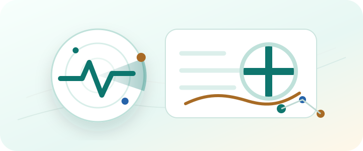
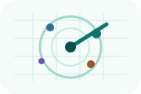
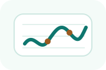

Cerca offerte
Filtra opportunità sanitarie per zona, turni, contratto e fonte.
Fonti visibili, tariffe confrontabili e candidatura assistita ma non automatica: tutto pensato per infermieri e OSS che vogliono decidere prima di investire tempo.

Filtra opportunità sanitarie per zona, turni, contratto e fonte.

Vedi come vengono separati dati ufficiali, segnali di contesto e criticità.
Racconta problemi concreti di lavoro, turni, gestione o organizzazione.
RadarSanità tiene separati offerte, fonti, foto reali, recensioni, tariffe e passaggi di candidatura. Così ogni dato ha un ruolo chiaro.
Tocca una sigla per vedere cosa significa.
Le fonti ufficiali, i datori diretti, i portali e i canali professionali restano separati. Tocca un nome per aprire il sito originale.
Fonte primaria, data del controllo e duplicati sono sempre vicini al dato.

Compenso, turni, distanza e mercato vengono letti insieme, non a pezzi.
Documenti, SPID/CIE, partita IVA e dati mancanti sono espliciti prima di aprire il canale ufficiale.
Logistica, organizzazione e opinioni dei colleghi sono utili, ma restano separati dai dati ufficiali.
Nel prodotto reale ogni numero sarà verificabile: fonte controllata, ultimo aggiornamento, duplicati accorpati e motivi di esclusione.
Cerca in più fonti, unisce offerte duplicate e mostra solo quelle compatibili con profilo, distanza, turni, contratto e categoria.
Le regole locali e la revisione assistita riassumono fonti, rischi, scadenze e requisiti. I dati importanti restano collegati alla fonte.
Confronta compensi e andamento del mercato per capire se una proposta è sopra, sotto o in linea con offerte simili nella stessa area.
Le informazioni non hanno lo stesso peso. RadarSanità mette in alto i segnali rapidi e lascia i dettagli in sezioni apribili quando servono.
Seleziona solo le offerte coerenti con ciò che cerchi.
Contratto, turni, requisiti e problemi sono già spiegati.
Foto, logistica e opinioni dei colleghi restano separate dai dati ufficiali.
Generi checklist e bozza; l'invio finale resta sul canale ufficiale e sotto il tuo controllo.
Ruolo, raggio dalla tua posizione, turni e vincoli personali.
Duplicati accorpati e offerte non coerenti escluse.
Dati ordinati per fiducia, valore e sforzo.
Bozza pronta, documenti elencati e invio manuale sul canale ufficiale.
Parti dalla tua posizione attuale e scegli il raggio di ricerca. Puoi cercare vicino a te o in tutta Italia: vengono elaborati solo risultati coerenti con il tuo profilo e i tuoi vincoli.
La tua ricerca personalizzata
RadarSanità applica filtri dichiarati e accorpa le offerte uguali trovate su più fonti.
Le opportunità che vuoi rivedere con calma.
Usa il cuore sulle offerte che vuoi ritrovare qui.
Bozze, checklist e passaggi preparati per candidarti personalmente sui canali ufficiali.
Rispondi con episodi concreti: turni, carichi, clima, crescita, burocrazia, famiglia, ricerca lavoro, gestione personale o qualunque altro problema che incontri davvero.
Le strutture possono chiedere priorità di evidenza sulla piattaforma. La visibilità commerciale resta separata dalla compatibilità: un annuncio sponsorizzato compare in evidenza solo quando è pertinente per ruolo, zona, turni e requisiti cercati dall'utente.